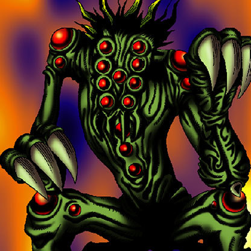

Shadow Ghoul

Description: "Can move into LABYRINTH terrain, and transforms into Wall Shadow."
STATS
ATK: 1600
DEF: 1300DECK COST
Deck Cost per Card: 34EFFECT NOT IMPLEMENTED
Fusion List (2 Possible Fusions)
- Shadow Ghoul + Mammoth Graveyard = Great Mammoth of Goldfine
- Shadow Ghoul + Rainbow Flower = Pumpking the King of Ghosts